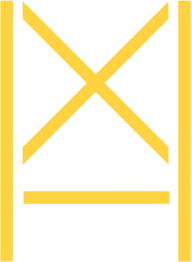
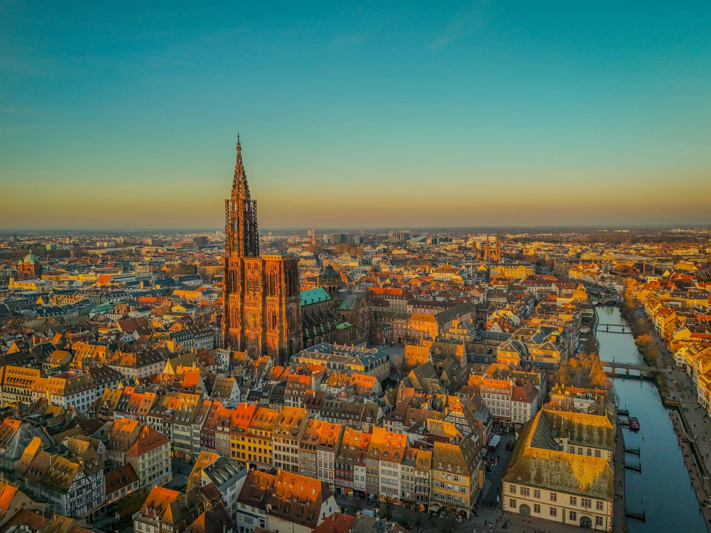
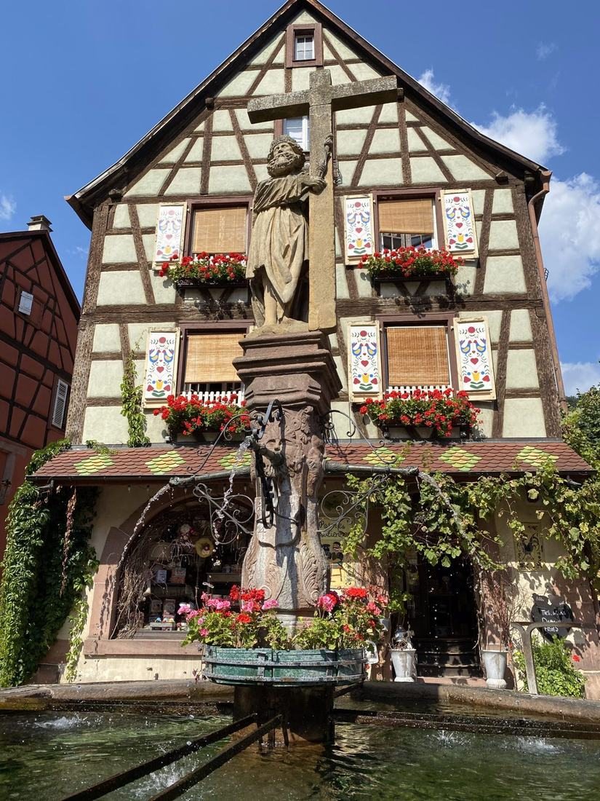
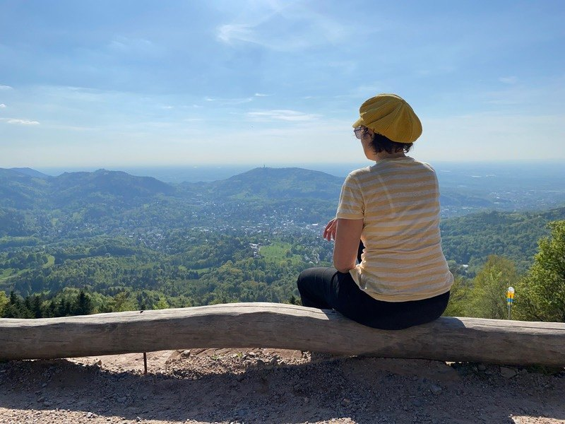
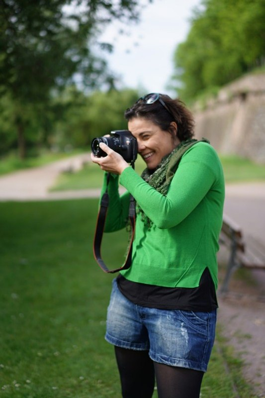
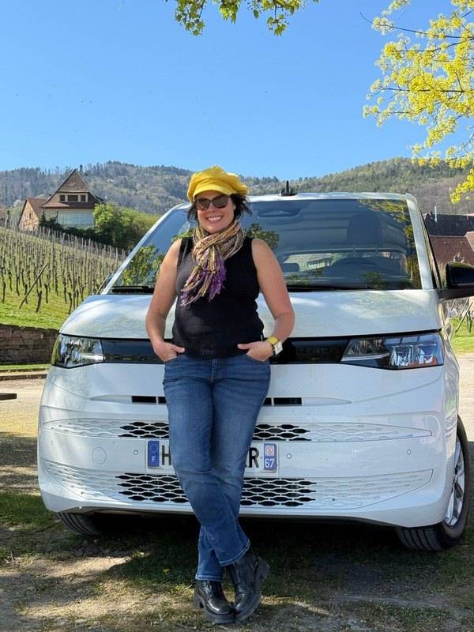
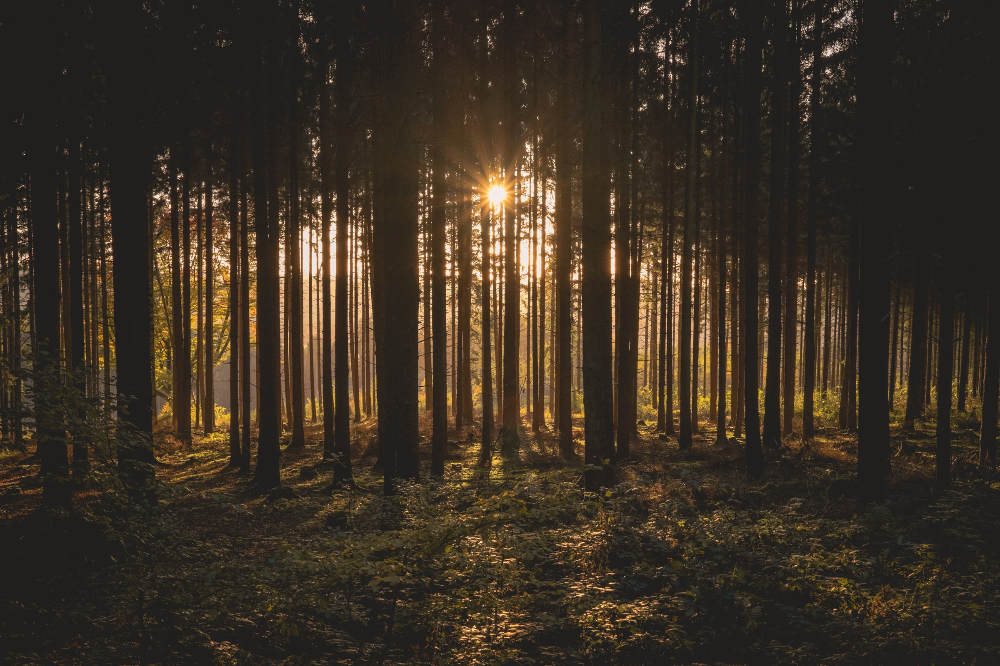
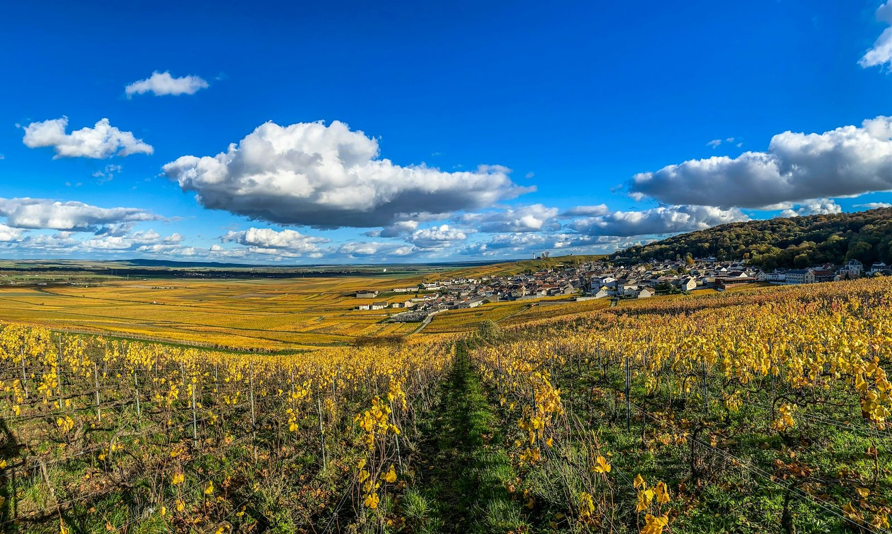
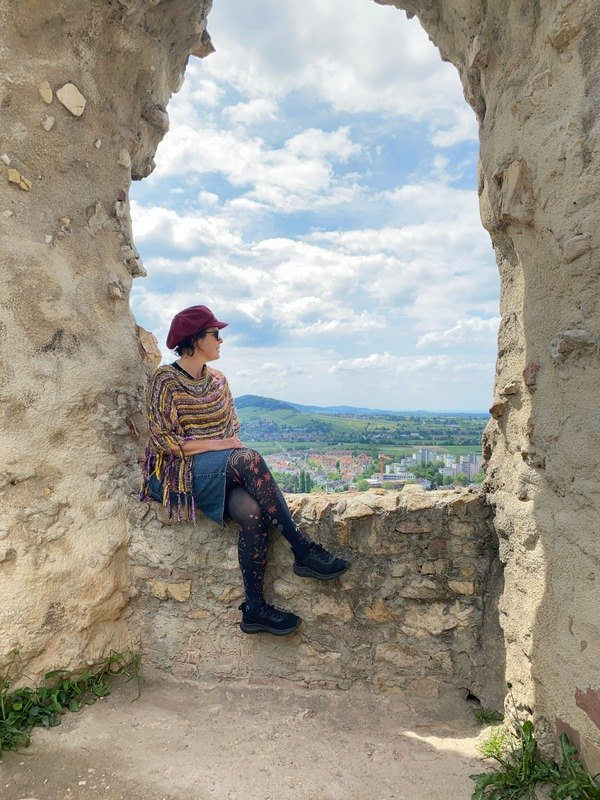

01
Guia credenciada
História, cultura, geografia, lendas e tradições.

VOYAGES
Guia e fotógrafa brasileira na Alsácia, França — tours privados em português.
A Alsácia não é um cenário — é uma história que precisa ser entendida.
Se for para vir,
venha para entender.
Isso muda tudo.

Cada vila, cada construção e cada tradição carrega marcas profundas da história, influências culturais e um trabalho contínuo de preservação.
Reduzir essa região a um cenário da Disney é perder o essencial.
Comigo ao seu lado, você não apenas visita a Alsácia. Você a entende. Você a sente. E quando ela é entendida… é aí que ela fica.
Sou brasileira, guia credenciada, fotógrafa e motorista profissional na Alsácia (França) e na Floresta Negra (Alemanha).
Moro em Estrasburgo (capital da Alsácia) há mais de 10 anos. Conheço profundamente a história e a cultura da região… e os seus cantinhos mais charmosos.
Acredito que um lugar só pode ser verdadeiramente apreciado quando é compreendido.

História, cultura, geografia, lendas e tradições.

A Alsácia e a Floresta Negra como cenário dos seus souvenirs.

Passeios por rotas panorâmicas, vinhedos, vilarejos medievais, picnics…
VTC · transfers para hotéis, estações de trem e aeroportos — França, Alemanha, Suíça.
Cada viagem é única — e, por isso, não trabalho com roteiros engessados.
Os roteiros são criados sob medida, de acordo com o seu ritmo e interesses. Podem incluir, por exemplo:
Arraste para o lado →
E mais!
Sempre com conforto, logística otimizada e segurança.
Experiências que atravessam fronteiras — França, Alemanha e Suíça.

Diversos circuitos do Norte ao Sul.

Metz, Nancy, Verdun, Domrémy-la-Pucelle (casa natal de Joana d’Arc).

Reims, Verzenay, Épernay.

Basel, Suíça.
Entre em contato para receber os roteiros.
Solicitar roteiroEssa experiência foi pensada para quem viaja com intenção.
Para quem se interessa pela história por trás dos lugares, pela cultura que molda cada detalhe e para quem se permite olhar além do óbvio.
Se a sua ideia de viagem é apenas colecionar lugares e fotografias, talvez essa não seja a experiência que você procura.
Venha para entender.
Atendo viajantes individuais, casais, famílias, grupos de amigos e também grupos organizados por agências.

Esta foi a segunda vez que tivemos o prazer de viajar com a Melissa e mais uma vez a experiência foi impecável. Em pleno clima de Natal, Estrasburgo e a Floresta Negra se tornaram ainda mais encantadores graças ao seu profundo conhecimento, sensibilidade e atenção aos detalhes. Seu profissionalismo e carinho fazem toda a diferença.Aline Carvalho
Fazer o ensaio fotográfico com a Melissa foi uma experiência incrível! Eu pensei que ficaria muito tensa na frente da câmera, mas o momento foi tão divertido que eu nem percebia a câmera mais. Além, é claro, dos lugares lindos que ela nos levou. É uma pessoa e uma profissional fantástica!Jassmine Kulitch
Parabéns, Melissa. Você é uma profissional fantástica. O grupo amou estar com você. Guia extremamente preparada e muito atenciosa. Obrigado por tudo. Já estamos com saudades e sempre vamos recomendar os teus trabalhos aí na França.Sergio Maciura
A guia Melissa foi excepcional, proporcionando uma experiência rica e detalhada, tornando nosso passeio ainda mais agradável e informativo. Estrasburgo é, sem dúvida, um destino que deixa lembranças inesquecíveis.Ana Lucia Barini
Nossa viagem foi maravilhosa, graças à Melissa, que nos mostrou essa região linda! Fomos a lugares belíssimos e inimagináveis, conhecemos a história da terra e do povo alsaciano.Jorge Salomão
Eu não entrego cenários.
Eu entrego a alma da região.
Atendimento em Português | Inglês | Francês
Transformo paisagens em memórias e histórias em vivências.